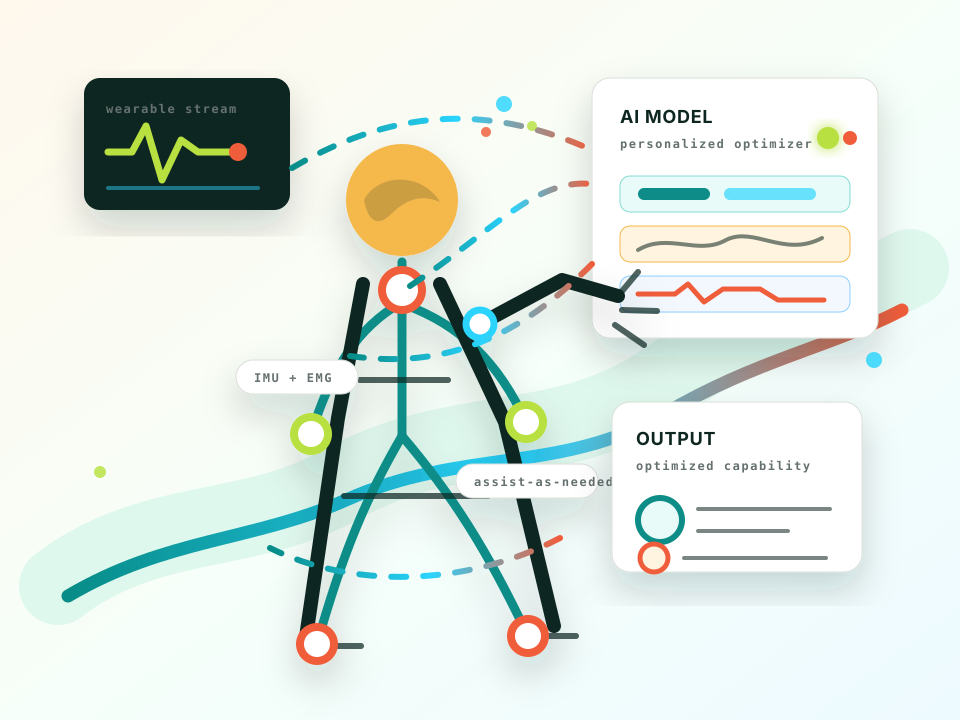

Rehabilitation robotics
Designing modular systems for home-based post-stroke upper-limb therapy that are engaging, measurable, and easier to live with.
Research vision
I am interested in technologies that add capability without taking over the person: robotic rehabilitation, wearable sensing, adaptive feedback, and cognitive support systems that help people remain active, independent, and themselves.
The animating question is simple: how can hardware, software, and the human nervous system work together so we can recover better, perform better, and age with more agency?

My version of "superhuman" is not a cyborg fantasy. It is a person who can keep moving, choosing, remembering, adapting, and participating in life.
These are the threads I want to keep weaving together: assistive robotics, wearable sensing, human-centered AI, rehabilitation, performance, aging, and independence.
Designing modular systems for home-based post-stroke upper-limb therapy that are engaging, measurable, and easier to live with.
Capturing motion, effort, fatigue, physiology, and context to support real-time feedback and long-term insight.
Creating adaptive tools that respond to the user's goals, state, and preferences while keeping the user in control.
Exploring technologies that can help protect planning, memory, working memory, and confidence when cognition becomes fragile.
Building toward systems that help people stay mobile, adventurous, and socially engaged without being confined by age or diagnosis.
Moving assistive and rehabilitative technology into homes, trails, gyms, workplaces, and everyday routines.
The goal is not to make impressive machines in isolation. The goal is to make systems that people can trust, wear, understand, repair around, and actually want near their bodies.
Assistance should expand the user's choices, not narrow them.
Sense what matters, interpret it carefully, respond helpfully, and learn from the person.
Homes are messy, bodies vary, motivation changes, and good technology respects that.
These are image concepts that would make the research page feel more memorable while avoiding generic robot-hand cliches.
A runner or hiker in a real landscape with subtle transparent overlays showing sensors, muscle activity, and decision feedback.
Editorial photo, human in motion outdoors, subtle wearable sensor overlays, warm natural light, hopeful, no sci-fi armor.
A calm home scene where a person uses a compact upper-limb rehabilitation robot with approachable hardware and clear feedback.
Human-centered rehabilitation robot at home, compact modular device, friendly clinical realism, soft daylight, no hospital gloom.
A dignified cognitive-assist concept: reminders, context, and planning support as ambient cues rather than intrusive screens.
Older adult living independently with ambient cognitive support, gentle visual cues, dignified, warm, practical, no surveillance aesthetic.